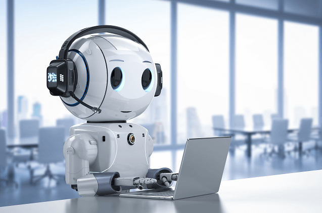

La Tecnología en el Futuro
Publicado el 30 de octubre de 2024
La tecnología está avanzando a un ritmo asombroso, y el futuro promete cambios aún más radicales en nuestras vidas diarias. Desde inteligencia artificial que podría transformar industrias enteras, hasta avances en biotecnología que extenderán nuestras vidas, el impacto de estas innovaciones será profundo y duradero.
En el área de la inteligencia artificial, estamos comenzando a ver aplicaciones que van desde el procesamiento del lenguaje natural hasta la creación de imágenes y el análisis de grandes cantidades de datos. A medida que los sistemas de IA se vuelven más sofisticados, se espera que puedan automatizar tareas complejas y ofrecer nuevas soluciones para problemas médicos, ambientales y económicos.
Otro aspecto fascinante es el avance de la tecnología espacial. Con empresas privadas y gobiernos invirtiendo en la exploración de Marte y más allá, es probable que veamos una segunda carrera espacial. Además, los satélites de órbita baja están ayudando a mejorar la conectividad global, permitiendo que lugares remotos tengan acceso a Internet.
Finalmente, la biotecnología y la genética están abriendo nuevas puertas hacia la medicina personalizada. La edición genética, por ejemplo, nos permitirá tratar enfermedades de una manera más eficaz y quizás algún día eliminar ciertas condiciones genéticas antes de que se desarrollen.
El futuro es emocionante y desafiante. Aunque estas tecnologías prometen cambiar el mundo, también plantean preguntas éticas importantes. ¿Cómo debemos utilizar estos avances de manera responsable? Sin duda, el papel de la tecnología en nuestro futuro será inmenso, y depende de nosotros decidir cómo queremos que moldee nuestras vidas.